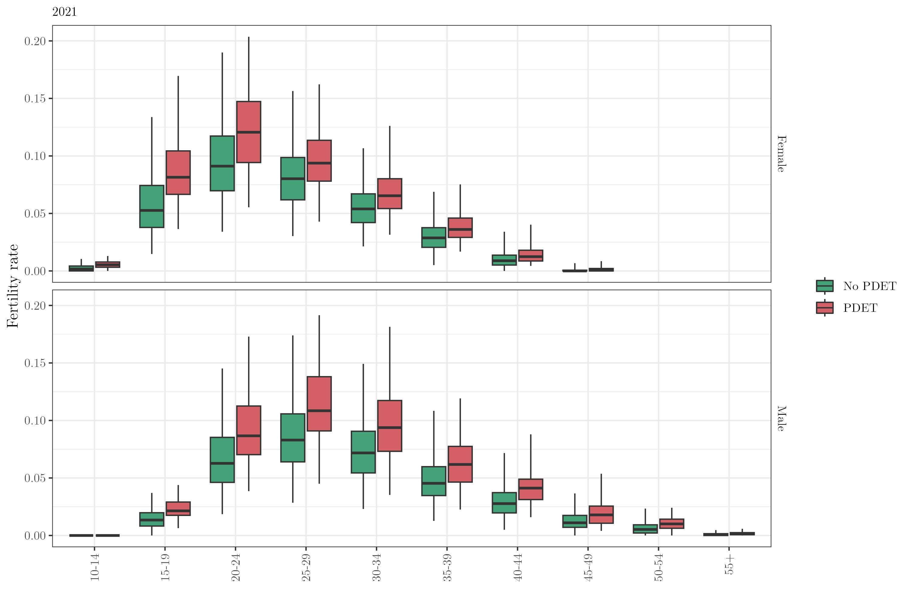
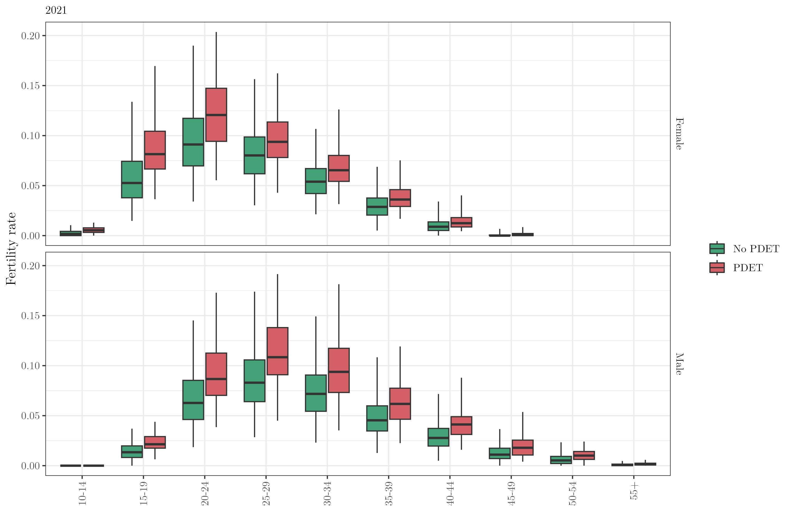
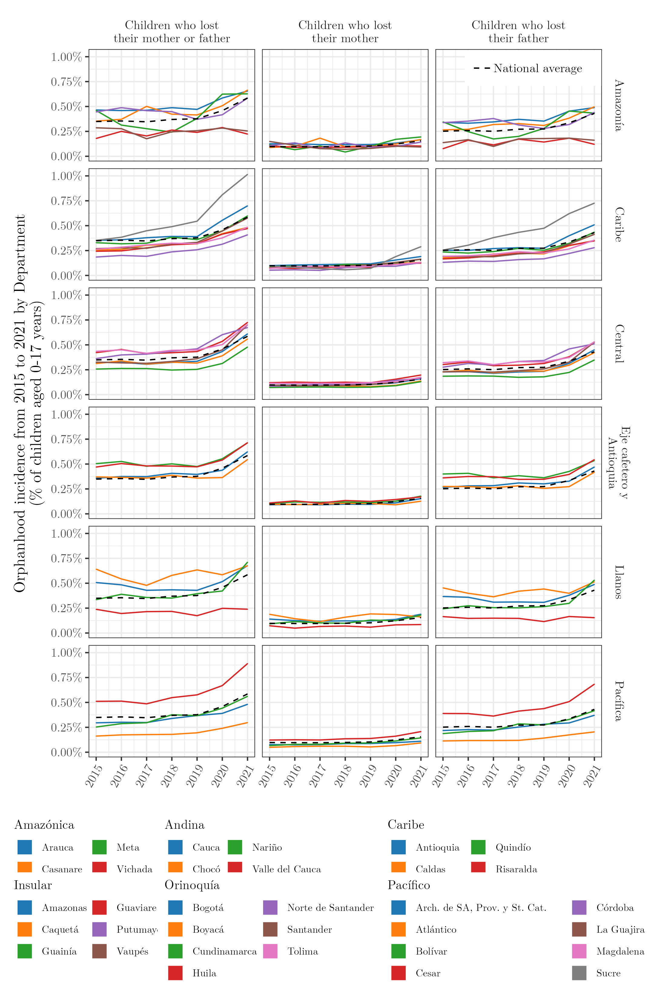
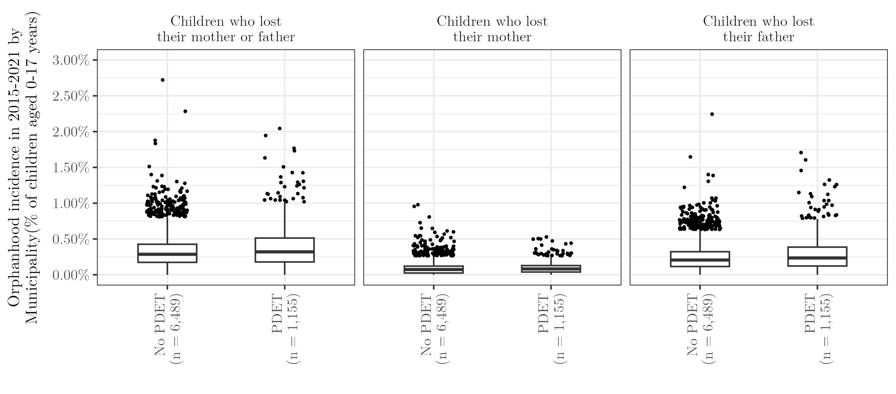
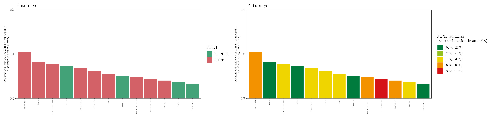
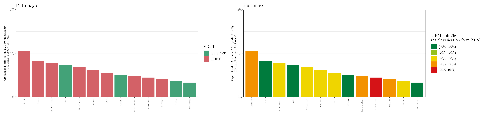
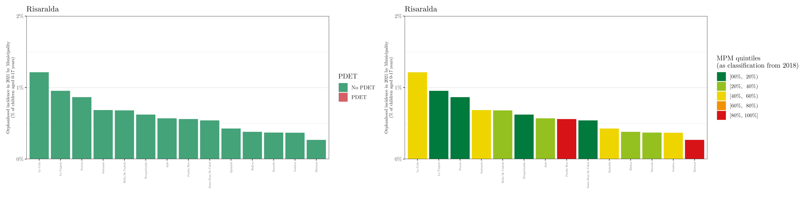
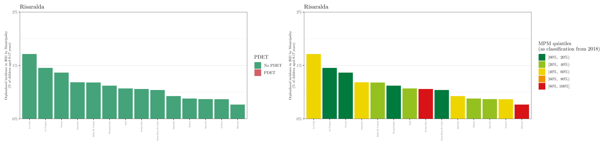

Orphanhood in Colombia
The 32 departments and one capital district (Bogotá) can be grouped together into the 6 natural regions of Colombia, namely, Pacífico, Caribe, Andina, Orinoquía, Amazónica, and Insular.
 |
 |
Also, the Colombia municipalities can be categorized the Programas de Desarrollo con Enfoque Territorial, PDET (left map) or based on a multidimensional poverty index (right map), namely “Medida de pobreza multidimensional de fuente censal en el total del municipio (MPM).”
The PDET includes 170 municipalities that were prioritized as the territories most affected by armed conflict, with higher levels of poverty, presence of illicit economies, and institutional weakness.
 |
 |
Death and fertility rates
The first thing we can analyze is the death and fertility rates in 2021 (averaged over gender and age group). The following plots show the death (left map) and fertility (right map) group by quintile; i.e., ordered.
 From these maps, we can notice that the death rates seem to be lower in the south/east municipalities (poorest places) whilst the fertility rates are higher.
From these maps, we can notice that the death rates seem to be lower in the south/east municipalities (poorest places) whilst the fertility rates are higher.
We can also analyze these rates grouped by the PDET or MPM classification. The plots below show these estimates for 2021.
PDET
 

MPM (or poverty index)


Orphanhood estimates
The following table shows the orphanhood prevalence and incidence estimates in 2021 (“total” and “% of children aged 0-17 years”) at the national, regional, and department levels.
These are the orphanhood prevalence estimates in 2021 (total and %) for all departments, stratified by regions.

These are the orphanhood incidence estimates from 2015 to 2021 (for children who lost their mother, father, or both) for all departments, stratified by regions.

These are the orphanhood incidence estimates (in %) in 2021 by municipality (per 1,000 children aged 0-17 years).

As mentioned before, the municipalities can be grouped based on the PDET and MPM classification. The following image shows the distribution of the orphanhood incidence estimates (in %) by municipalities from 2015 to 2021 stratified by gender and PDET or MPM.
PDET

MPM (or poverty index)

Complementary, the plots below show the estimated orphanhood incidence in 2021 (in %) for all municipalities (grouped by department) and classified according to the PDET and MPM


 
  
 


Raw data
Complementary, the following table shows the orphanhood prevalence and incidence estimates in 2021 (“total” and “% of children aged 0-17 years”) of children who lost their mother, father, or both, at the national, regional, and department levels.